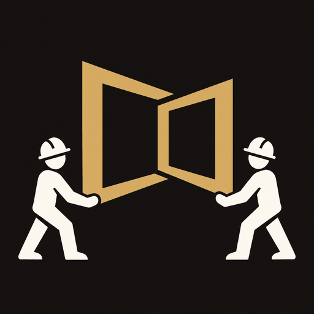

PLANET WINDOWS

PW Posa Esterni
Per aggiungere l’app al tuo iPhone:
Apri questa pagina in
Safari
.
Tocca
Condividi → Aggiungi alla schermata Home
.
Controlla l’icona e tocca
Aggiungi
.
Apri PW Posa Esterni